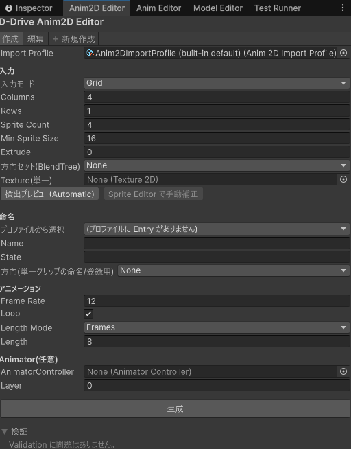
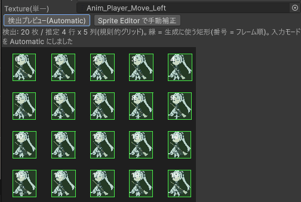
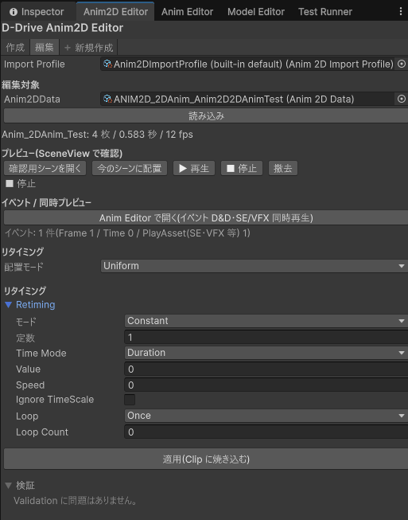

2D アニメーションデータ（Anim2DData）は「このパラパラ絵（スプライトの Clip）を、どのステート・レイヤーで、方向ありなら 4 方向 / 8 方向のどれとして再生するか」をまとめた再生単位です。3D のアニメーションデータ（AnimData）の仲間なので、再生の仕組み・Frame/Time イベント・切り替え時の混ざり（CrossFade）はすべて 3D と共通です。
スプライトシート（コマ絵を 1 枚の画像に並べたもの）を渡すと、Anim2D Editor が次をまとめて行います。
Anim_{Name}_{State}、方向ありは末尾に角度）.anim）を保存する。保存先フォルダも自動で作られますx / y パラメータも自動追加Tools > D-Drive > Editors > Animation (2D)（ウィンドウ名は「Anim2D Editor」）。Project で Anim2DData を選んでいれば、そのまま編集対象として読み込まれますTools > D-Drive > Editors > Animation (2D) を開き、ツールバーの「スプライトから新規作成…」を押す(「Anim2D 新規作成」ポップアップが開きます)Anim_Player_Idle と Anim2DData Player Idle ができ、ポップアップは閉じて Anim2D Editor(編集用)が自動で開き、その「編集対象」に入ります
Anim.Play(ID, animator) を呼ぶだけです。カタログも 3D と共通（AnimCatalog）です。| 要素 | 説明 |
|---|---|
| スプライトから新規作成… | 「Anim2D 新規作成」ポップアップ(次節)を開きます。生成が終わるとポップアップは閉じ、Anim2D Editor 本体がその Anim2DData を編集対象にして開き直されます |
| ＋ 新規作成 | 各専用エディタ共通の簡易作成ダイアログ。ID・表示名・カテゴリだけの空の Anim2DData を作ります(Clip は入っていません)。画像からまとめて作る場合は上の「スプライトから新規作成…」を使ってください |
Tools > D-Drive > Editors > Animation (2D) の「スプライトから新規作成…」から開く独立ウィンドウです。画像から Clip と Anim2DData を作るための入力だけを持ちます。ウィンドウを閉じる/開き直すと入力欄は消えます(生成が終われば Anim2D Editor 本体側に Anim2DData が残ります)。
| 要素 | 説明 |
|---|---|
| Import Profile | 命名候補（Name と State の組み合わせ）と Clip の保存先を持つ設定ファイル。空にするとプロジェクト内の既定プロファイルを自動で探し直し、無ければ保存されない組み込みの既定が使われます |
| 入力モード | Grid = 画像を Columns × Rows で等分割する（コマの大きさが揃ったシート向け）。Automatic = 透明な背景からコマの矩形を自動検出する（隙間が不揃いなシート向け）。Existing（既存スプライト）= 既に Sprite Editor などで切り分け済みの画像から、そのコマを拾うだけ |
| Columns / Rows / Sprite Count | Grid 用。列数・行数と、左上から行順に使うコマ数（Columns × Rows を超えると切り詰め）。既定 4 / 1 / 4。Columns の 1 未満は 1 になります |
| Min Sprite Size / Extrude | Automatic 用。検出する矩形の最小サイズ（既定 16。小さいゴミを拾わないため）と、矩形の外側に足す余白（既定 0） |
| 方向セット(BlendTree) | None = 方向なし（1 枚の画像から 1 本の Clip）。Four = 0 / 90 / 180 / 270 度。Eight = 45 度刻み。None 以外にすると「方向ごとの Texture(4|8 方向。空欄は無視されます)」の欄が角度名（「0°」「45°」…「315°」）で並び、角度ごとに画像を入れます |
| Texture(単一) | 方向なしのときの元画像 |
| 検出プレビュー(Automatic) | 自動検出を実行し、画像の上に結果を重ねて表示します。緑の枠 = 生成に使う矩形、枠の番号 = コマの順番。結果は「検出: N 枚 / 推定 R 行 x C 列(規則的グリッド|不規則)…」のように出ます。押した時点で入力モードが自動的に Automatic に切り替わります。表示の縮尺は元画像のサイズ基準なので、Max Size で縮小される大きな画像でも枠はずれません |
| Sprite Editor で手動補正 | 検出した矩形を画像の Importer に書き込んでから Unity の Sprite Editor を開きます（検出前は押せません）。Sprite Editor で直して Apply したら、入力モードは「既存スプライト」に切り替わっているので「生成」を押すだけです。2D Sprite パッケージ（com.unity.2d.sprite）が無いと開けません（案内メッセージが出ます。現状は未導入） |
| プロファイルから選択 | Import Profile の Entry 一覧。選ぶと「Name」と最初の State が入ります。Entry が無いと「(プロファイルに Entry がありません)」だけが出ます |
| Name / State | どちらも必須。Clip 名・Anim2DData の名前・カテゴリ（フォルダ分け）に使われます。空のまま「生成」すると Console に「Name / State を入力してください。」が出て何も作られません |
| 方向(単一クリップの命名/登録用) | 方向セットが None のときに、この 1 本を何度の Clip として扱うか。FromName = 画像名の末尾から自動判定（下の「命名規約」）/ None / Deg0…Deg315。角度があると BlendTree にその角度で登録されます |
| Frame Rate / Loop | 1 秒あたりのコマ数（既定 12）とループ再生（既定 ON） |
| Length Mode / Length | Clip の長さ。Frames なら「Length フレーム分」（既定 8 = 8 ÷ Frame Rate 秒）、Seconds なら秒 |
| Animator(任意): AnimatorController / Layer | 入れると BlendTree 登録まで行います。空のままなら登録は飛ばされ、Clip と Anim2DData だけができます（あとから Controller に手で組み込む前提） |
| 生成 | 方向なし: スライス → Clip 生成 → 角度があれば BlendTree 登録 → Anim2DData 作成。方向セットあり: 角度ごとの画像を順に処理し、角度順に Direction Clips を組み立てます（一番小さい角度、通常 0° の Clip が主 Clip になります）。同じ角度に既に Clip が登録されていると「BlendTree 登録」ダイアログ「角度 N には既にクリップが登録されています。上書きしますか?」が出るので「上書き」か「スキップ」を選びます。生成が終わるとこのポップアップは閉じ、Anim2D Editor 本体がその Anim2DData を編集対象にして自動で開きます |


| 要素 | 説明 |
|---|---|
| 編集対象 | 「Anim2DData」欄と「読み込み」ボタン。読み込むと「Clip 名: N 枚 / 秒 / fps」の要約が出ます。「Clip が未設定、または Sprite キーフレームを読み込めませんでした。」なら Clip が無いか、コマ差し替えの Clip ではありません |
| プレビュー(SceneView で確認) | ウィンドウ内には絵を出さず、シーンに [D-Drive] Anim2D Preview（SpriteRenderer + Animator。シーンには保存されません）を置いて実際の再生経路で動かします。「確認用シーンを開く」= VFX と共通の確認用シーンを開き（無ければ生成）プレビュー物を配置 / 「今のシーンに配置」= 開いているシーンやプレハブモードに置く / 「▶ 再生」= 未配置なら自動配置してから再生 / 「■ 停止」/ 「撤去」= プレビュー物を消す。状態は「プレビュー物は未配置」「プレビュー物を配置済み(SceneView を確認)」「● 再生中 N%(周回 N)」「■ 停止」「Anim Editor に引き渡し済み」などと表示されます |
| Anim Editor で開く(イベント D&D・SE/VFX 同時再生) | イベント編集は共通の Anim Editor で行うため、そちらへ橋渡しします。押すと再生を止め、プレビュー物はシーンに残したまま Anim Editor に引き渡します（絵が消えないようにするため）。Anim Editor 側が同じプレビュー物をそのまま引き取ります |
| イベント要約 | 読み取り専用。「イベント: なし。「Anim Editor で開く」から追加できます。」または「イベント: N 件(Frame a / Time b / PlayAsset(SE・VFX 等) c)」。Anim Editor から戻ってウィンドウをクリックすると自動更新されます |
| リタイミング | コマの間隔（各コマを何秒目に出すか）を Clip に書き込みます。「配置モード」= Uniform（等間隔に戻す）/ Retiming（下の「Retiming」のカーブで不均等に配置）。「Retiming」= 共通の ValueDef 欄（「モード」「定数」「Parametric種別」「Ease」「Bezier P1 / P2」「From」「To」「カーブ」「Normalized」など）。「適用(Clip に焼き込む)」= 主 Clip を書き換え、さらに同じコマ数の方向 Clip すべてに同じ配置をまとめて適用します。Ctrl+Z で戻せます |
| 検証 / 修正 | 読み込んだデータの問題を並べます。自動で直せる行にだけ「修正」ボタンが付きます（例: BlendTree の x / y パラメータ不足）。未読み込みなら「対象を読み込むと検証結果が出ます。」、問題無しなら「Validation に問題はありません。」 |
| 項目 | 説明 |
|---|---|
| Directions（方向） | None = 方向なし / Four = 0・90・180・270 / Eight = 45 度刻み。Four / Eight のときは State Name の BlendTree に Direction Clips が登録されている前提で動きます |
| Direction Clips | 角度順（0 / 45 / … / 315、Four なら 0 / 90 / 180 / 270）の Clip。ツールが自動で登録します（Four は 4 本、Eight は 8 本必要） |
| Param X Name / Param Y Name | BlendTree の向きパラメータ名。既定は x / y（ツールの規約）。方向ありで空だと Error |
| Retiming | コマ配置のカーブ。Anim2D Editor 本体の「適用」で Clip のキー時刻に焼き込むためのもので、ゲーム中には参照されません。初期値は Constant(1) |
| 項目 | 説明 |
|---|---|
| Clip | 再生する Clip。長さ・フレームレートはイベント（Frame/Time）と終了判定に使います。Frame Rate は Clip から読まれます（未設定なら 30 扱い） |
| State Name / Layer | Animator Controller 上のステート名（CrossFade の対象。空なら Clip の名前）とレイヤー |
| Loop | ON なら周回ごとに OnLoop が出て、止める指示があるまで続きます |
| Default Cross Fade | 切り替え時の混ざり秒数（既定 0.1） |
| Mask / Ik / Blend Shapes | 3D 向け。2D では通常使いません |
| Display Name / Description / Category / Tags / Icon / Events | 表示名・説明・フォルダ分け・タグ・アイコン・イベント一覧。Events（Frame/Time で SE・VFX を出す本体）の編集は Anim Editor で行います |
Project の右クリック Create > D-Drive > Anim > Anim2D Import Profile で作ります（既定ファイル名 Anim2DImportProfile）。プロジェクト内の 1 つが自動で使われます。
| 項目 | 説明 |
|---|---|
| Entries（Name / States） | 名称（例: Player）と、その名称で使えるステート一覧（例: Idle, Run, Attack）。「Anim2D 新規作成」ポップアップの「プロファイルから選択」に出ます |
| Default Clip Folder | 生成した Clip の保存先（既定 Assets/GameData/Anim2D/Clips） |
| Default Frame Rate / Default Directions | ツールチップ上は「既定」ですが、現状はウィンドウの初期値（12 / None）に反映されません。実際に効くのは Entries と Default Clip Folder です |
8 方向 BlendTree の向きを移動方向から自動で決めるコンポーネント。キャラの GameObject に付けて使います。Target（向きを書き込む Animator。空なら自身）/ Camera Relative（既定 ON。カメラの向き基準。Camera.main が無ければワールド基準）/ Smoothing（向きの平滑化秒。既定 0.08、0 で即時）/ Param X / Param Y（BlendTree のパラメータ名）/ Initial Direction（開始時の向き。上 = (0,1)）。プログラム側は移動ベクトルを渡すだけです。
| 対象 | 規則 |
|---|---|
| Clip 名 | 方向なし: Anim_{Name}_{State} / 方向あり: Anim_{Name}_{State}_{角度}（角度は 0 / 45 / 90 / 135 / 180 / 225 / 270 / 315） |
| 画像名の末尾の角度 | 「方向」を FromName にしたとき、画像名が _0 _45 … _315 で終わっていればその角度になります（例: player_run_90.png → 90°）。それ以外は方向なし扱い |
| Sprite（コマ）の名前 | {画像名}_{連番}（0 始まり）。Grid / Automatic 共通 |
| コマの順番 | Grid: 左上から右へ、行ごとに下へ。Automatic: コマの中心の高さで行に分け、行の中は左から右、行は上から下。Existing: Sprite Editor の並び（左上 → 右下）に揃えます |
| Clip の保存先 | Import Profile の Default Clip Folder（未設定なら Assets/GameData/Anim2D/Clips）。フォルダが無ければ作られます。同名があると Anim_X_Y 1.anim のように連番が付きます（上書きではありません） |
| Anim2DData の保存先と名前 | Assets/GameData/Anim2D/{カテゴリ}/ANIM2D_{カテゴリ}_{識別子}.asset。カテゴリ = Name、識別子 = Name + State を英数字にしたもの、表示名は「{Name} {State}」。ID の頭は ANIM2DID |
| やりたいこと | 設定 |
|---|---|
| 4 コマ横並びのシートから待機アニメ | 入力モード Grid、Columns=4 / Rows=1 / Sprite Count=4、Name / State を入力、Frame Rate=12、Loop ON、Length Mode=Frames / Length=4 →「生成」 |
| 隙間が不揃いなシートを切る | Texture を入れて「検出プレビュー(Automatic)」→ 緑枠と番号を確認 →「生成」（入力モードは自動で Automatic になります） |
| 自動検出がずれたので手で直す | 「検出プレビュー」→「Sprite Editor で手動補正」→ Sprite Editor で直して Apply → 入力モードが「既存スプライト」になっているので「生成」（2D Sprite パッケージが必要） |
| 8 方向キャラの歩きを一括で作る | 方向セット=Eight、「0°」〜「315°」に各画像、AnimatorController と Layer を指定 →「生成」で 8 本の Clip + BlendTree 登録 + Direction Clips が一度にできます |
| 攻撃の当たるコマで SE / VFX | Anim2D Editor 本体 →「Anim Editor で開く(イベント D&D・SE/VFX 同時再生)」→ タイムラインで「＋ 現在位置に SE」（Anim Editor 参照） |
| ためて素早く振る（コマ間隔を不均等に） | Anim2D Editor 本体 → 配置モード=Retiming → Retiming の「モード」を Parametric にして Ease（EaseInOut など）を選ぶ →「適用(Clip に焼き込む)」。方向 Clip も同時に揃います |
| コマ間隔を等間隔に戻す | 配置モード=Uniform で「適用(Clip に焼き込む)」 |
| シーンで動きを確認する | Anim2D Editor 本体 →「確認用シーンを開く」（または「今のシーンに配置」）→「▶ 再生」。終わったら「撤去」 |
| 移動方向に合わせて自動で向きを変える | キャラに Anim2DFacing を付け、Camera Relative / Smoothing を調整。向きの計算はプログラム側が移動ベクトルを渡します |
「検証」パネルに出るもの（3D と共通の警告は Anim Editor のページも参照）。
| 表示 | 対処 |
|---|---|
| Clip が未生成(または Missing)です。Anim2DEditor で生成してください | 「Anim2D 新規作成」ポップアップで生成し直すか、Clip を手で入れる |
| Directions=Four|Eight ですが DirectionClips が N 本です(M 本必要) | 足りない角度の画像を入れて生成し直す（生成時に Console にも「方向クリップが不足しています」と出ます） |
| DirectionClips[i] が未設定(または Missing)です | その角度の Clip を入れ直す |
| 方向付きなのに BlendTree のパラメータ名(ParamXName / ParamYName)が空です | Param X Name に x、Param Y Name に y を入れる |
| Directions=None ですが DirectionClips が設定されています(使われません) | 方向セットにするか、Direction Clips を空にする |
| Controller に StateName '…' が見つかりません(BlendTree のパラメータ検査をスキップしました) | Controller にステートを作るか State Name を合わせる（Controller の配線は任意なので警告止まり） |
| '…' の BlendTree に x,y パラメータ … がありません | 「修正」ボタンで Float パラメータが自動追加されます |
| '…' のスライス済みスプライトの参照が N 件切れています(元テクスチャの再インポート等で消失した可能性があります) | 元画像を再スライスして Clip を作り直す |
| Frame イベント(…)が Clip 長(… フレーム)を超えています / Time イベント(…s)が Clip 長(…s)を超えています | Anim Editor でマーカーを Clip の長さより手前に動かす |
| Loop=false ですが OnLoop イベントがあります(発火しません) | Loop を ON にするか行を消す |
| Flags.Load が Preload ではありません(…) | 2026-09-17 以前に作った Anim2DData（3D の AnimData も同様）で起きることがあります。「修正」ボタンを押すと直ります（Asset Browser の「Validation > Run All」からも実行できます）。放置すると Anim Editor で SE / VFX を設定しても実行時に一切鳴らない/出ないままになります（見た目のアニメーションだけは動くため気づきにくい不具合でした。原因と対応は 39_usability_fixes_2026-09-17.md の U-20 を参照）。2026-09-17 以降に新規作成した Anim2DData はこの設定が自動で入るため対処不要です |
Console（ログ）に出る主なもの:
| 表示 | 対処 |
|---|---|
| [Anim2D] リタイミングのカーブが 0 → 1 へ単調増加していないため適用しませんでした。… | Retiming が初期値 Constant(1) のまま。Ease かカーブを設定してから「適用」（下の注意点） |
| [AutomaticSpriteSlicer] 検出された矩形が 0 件です。背景が透明でない / minSpriteSize が大きすぎる可能性があります。 | 背景が透明な画像か確認する。Min Sprite Size を小さくする |
| [ExistingSpriteCollector] … 内に Sprite が見つかりません。TextureImporter が Sprite/Multiple になっているか確認してください。 | Existing は切り分け済みの画像専用。画像の Inspector で Texture Type = Sprite、Sprite Mode = Multiple にしてスライスしておく |
| [Anim2DEditorWindow] 有効な方向クリップが 1 枚もありません。Anim2DData を作成しませんでした。 | 方向ごとの Texture 欄がすべて空か失敗。少なくとも 1 つ画像を入れる |
| [BlendTreeRegistrar] ステート "…" が存在しますが、Motion が BlendTree ではありません。/ BlendTree "…" の BlendType が FreeformDirectional2D ではありません。 | Controller に同名のステートが別の形で既にあります。ステート名を変えるか、Controller 側を 2D Freeform Directional の BlendTree にする |
[D-Drive] Anim2D Preview はウィンドウを閉じてもスクリプトの再コンパイルでも残ります（Anim2D Editor と Anim Editor で 1 つを共有）。消えるのは「撤去」を押したとき、Anim Editor 側で確認用モデルを設定・変更したとき、3D のアニメーションデータに切り替えたときだけですAnim_X_Y 1.anim のように連番付きで別に保存されます。古い方は手で消してください